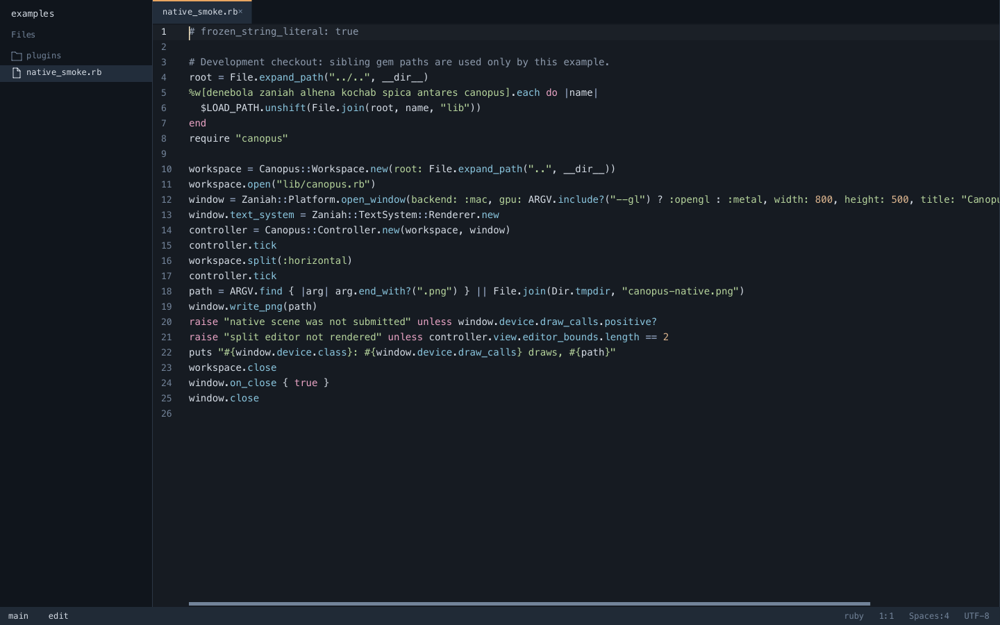

Native by default
GPU windows on every desktop, plus TUI and headless modes when a window is the wrong tool.
Metal · OpenGL · WGLCanopus 0.1.0
A native code editor built in Ruby. GPU-rendered windows, language intelligence, a real terminal, Git tools, and Vim bindings—without leaving your stack.

Canopus keeps the daily loop in one fast, native workspace while external tools remain independently installable.
GPU windows on every desktop, plus TUI and headless modes when a window is the wrong tool.
Metal · OpenGL · WGLCompletion, diagnostics, rename, formatting, symbols, and code actions through language servers.
LSP · snippets · foldingTabs, splits, sessions, terminals, project search, Git operations, and optional Vim modes.
Terminal · Git · VimCanopus ships as a Ruby gem. Install it, then point it at the directory you already use.
gem install canopuscanopus --project .Native windows require platform graphics libraries. Check platform details.